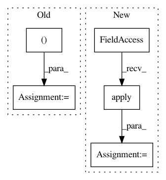

67f74e592427d15578eae688f677952d8bd98d3a,tensorforce/core/distributions/categorical.py,Categorical,tf_parametrize,#Categorical#Any#Any#,80
Before Change
def tf_parametrize(self, x, mask):
epsilon = tf.constant(value=util.epsilon, dtype=util.tf_dtype(dtype="float"))
shape = (-1,) + self.action_spec["shape"] + (self.action_spec["num_values"],)
value_shape = (-1,) + self.action_spec["shape"] + (1,)
// Deviations
action_values = self.deviations.apply(x=x)
action_values = tf.reshape(tensor=action_values, shape=shape)
After Change
else:
// Explicit states value and advantage-based action values
states_value = self.state_value.apply(x=x)
states_value = tf.reshape(tensor=states_value, shape=shape[:-1])
action_values = tf.expand_dims(input=states_value, axis=-1) + action_values
action_values -= tf.math.reduce_mean(input_tensor=action_values, axis=-1, keepdims=True)
// TODO: before or after states_value?
In pattern: SUPERPATTERN
Frequency: 3
Non-data size: 5
Instances
Project Name: reinforceio/tensorforce
Commit Name: 67f74e592427d15578eae688f677952d8bd98d3a
Time: 2020-04-25
Author: alexkuhnle@t-online.de
File Name: tensorforce/core/distributions/categorical.py
Class Name: Categorical
Method Name: tf_parametrize
Project Name: etal/cnvkit
Commit Name: ec576f6724639d899e39664558c2cf0ddd052449
Time: 2015-11-18
Author: eric.talevich@gmail.com
File Name: cnvlib/export.py
Class Name:
Method Name: fmt_cdt
Project Name: p2irc/deepplantphenomics
Commit Name: 96e63c96b5255ce7f564ddf842e7211606b64e38
Time: 2019-08-02
Author: jubbens@gmail.com
File Name: deepplantphenomics/layers.py
Class Name: batchNormLayer
Method Name: forward_pass